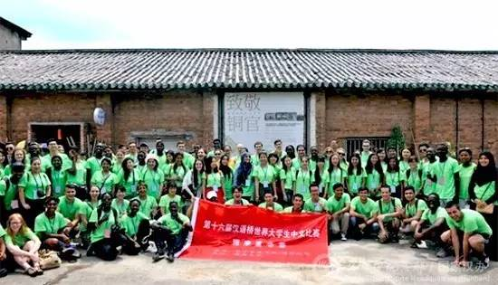
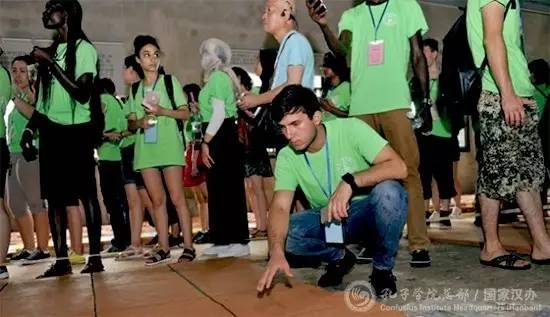
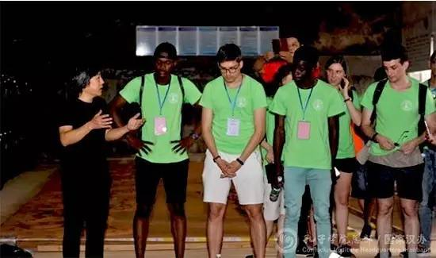
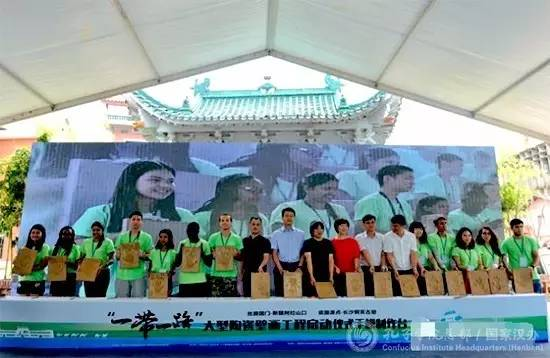
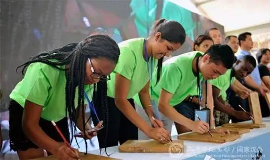
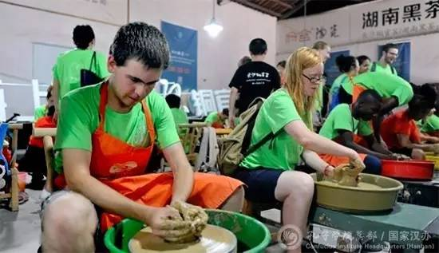
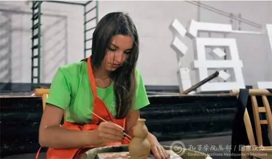
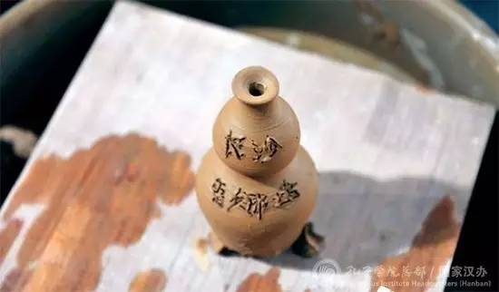
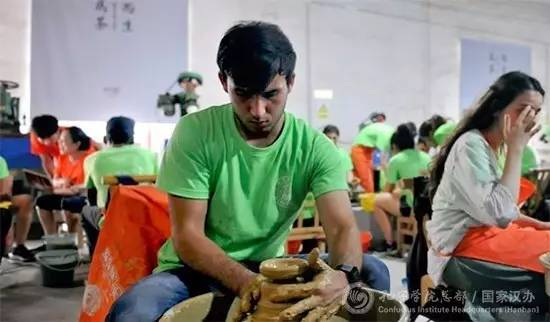
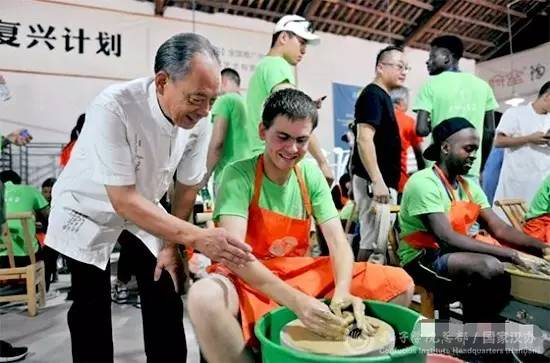

每日一篇——“汉语桥”故事 / 赴千年陶都触摸中国文化 “汉语桥”选手再谈“中国热”
 478
478
来源：星辰在线、孔子学院总部/国家汉办
导语
您知道中国的瓷器是怎么做出来的吗？来自106个国家的150位“汉语桥”选手已经知道。那您知道汉语在国外究竟有多“热”吗？这150位“汉语桥”选手也知道。此文让他们告诉你一切！
见证：新丝路、新瓷路文明
中国的茶叶、中国的瓷器、中国的丝绸，对于“一带一路”沿线国家的外国青年来说，也许并不陌生。然而，中国瓷器究竟是怎么做出来的，却并没有太多的外国青年知道。

“汉语桥”选手们在千年陶都长沙铜官合影留念
近日，来自106个国家的150位“汉语桥”选手，在中国古代五大陶都之一的长沙铜官，亲手触摸了一把松软的铜官陶土，在转盘上握捏出自己心中中国瓷器的模子。

在千年陶都感受泥土气息
当天，“一带一路”系列（六副）大型陶瓷壁画工程启动仪式在长沙铜官举办，创作完成的陶瓷壁画将悬挂于阿拉山口火车站。新疆阿拉山口市毗邻哈萨克斯坦，是中国在新亚欧大陆桥上向西开放的第一门户，阿拉山口火车站更是重要的对外窗口。

壁画创作者肖小裘老师（左）向选手介绍制作过程
因阿拉山口市火车站广场建设需要，铜官陶瓷产业复兴重要领军人物、著名陶艺家肖小裘承担了这六副大型壁画的创作任务。

各国选手代表在长沙铜官按下象征友谊的陶瓷手印
此次大型陶瓷壁画工程，牵手“一带一路两大节点地区”——湖南与新疆，再现了大国新丝路、新瓷路文明。“千年友谊，从长沙再出发”，现场手模陶艺是本次启动仪式的亮点，现场20个国家选手代表与铜官陶艺家等嘉宾共同按下象征友谊的陶瓷手印，留下的手印将成为大型壁画的重要组成部分。

汉语桥选手代表在自己的手印上签字
“汉语桥”的150位选手代表还亲身参与了这六副陶瓷壁画的创作过程，体验了一把中国陶瓷的制作工艺。
反馈：汉语在国外有多“热”
捷克：掀起“中国热”
来自捷克的赵洋，今年二十一岁，是一名大二学生，学中文只有一年。谈到为何来参加“汉语桥”活动，赵洋说，自己第一次来中国，来湖南长沙，通过此次活动，认识了不同国家的朋友，了解到各种多元的文化，这是一件很有意思的事情。
赵洋一边做陶碗，一边跟记者交流捷克的汉语教育形势：“去年中国国家主席习近平访问了捷克，在捷克也掀起了‘中国热’。现在捷克学中文的人很多，越来越多的捷克人对中国文化感兴趣。中国古代诗人李白、杜甫的诗篇被翻译成了捷克语，深受捷克人喜爱。当然，很多捷克人认为，中国是一个很重要的国家，学好中文十分有用。”

捷克选手赵洋
俄罗斯：汉语竞争很激烈
来自俄罗斯的美女雷娜塔目前是一名大二学生。学了两年中文的她讲起汉语来十分流利。雷娜塔说自己九月将到岳阳学习汉语，为期一年。“今年六月，我在俄罗斯的‘汉语桥’选拔赛中获得了第六名。这个比赛在俄罗斯竞争很激烈，因为俄罗斯人汉语水平很厉害，光在我的大学就有六百人学中文。”

俄罗斯选手雷娜塔
“我曾经到哈尔滨学了四个月中文。这次是我第一次来长沙，我非常喜欢这里，喜欢这里的名胜古迹、美食和热情的长沙人。我最喜欢吃长沙的凉面。” 雷娜塔说虽然从未感受过这样的炎热，但自己很希望在这里工作生活。

雷娜塔的作品刻着“长沙”和“雷娜塔”
塔吉克斯坦：人们希望学好汉语在中国找份好工作
谈到来中国，塔吉克斯坦帅小伙侯子墨丢出一句网络流行语：“中国那么大，我想去看看！”已经学中文两年的他说，“光在我的大学，就有三千多名学生学习汉语。“现在汉语应用十分广泛，我们在塔吉克斯坦也经常能看到听到中文。不少塔吉克斯坦人希望学好汉语，来中国找份好工作。”
侯子墨表示，自己第一次做的这个陶瓷作品，将会送给在塔吉克斯坦教他中文的老师。“她来自中国山东，我希望用这个小礼物感谢她教会我中文。”

塔吉克斯坦选手侯子墨
今年恰逢“汉语桥”落户湖南10周年，这次特殊的铜官窑体验活动，可以让世界青年们进一步感受千年大唐的陶瓷文明，了解中国陶瓷及长沙铜官窑‘海上陶瓷之路重要支点’的辉煌历史，让万里瓷路从长沙再出发。

铜官陶瓷传承人之一的谭冀超（左）收个“洋徒弟”
此外，通过这次活动，大家也从“汉语桥”选手的一言一行中发现，随着中国世界地位的不断提升，“汉语热”正在全球迅速蔓延。孔子学院将继续承担起搭建中外文化交流桥梁的重要责任，提质增效，扩大规模，以求帮助更多的海外青年学习汉语、增强中国文化知识、了解中国。